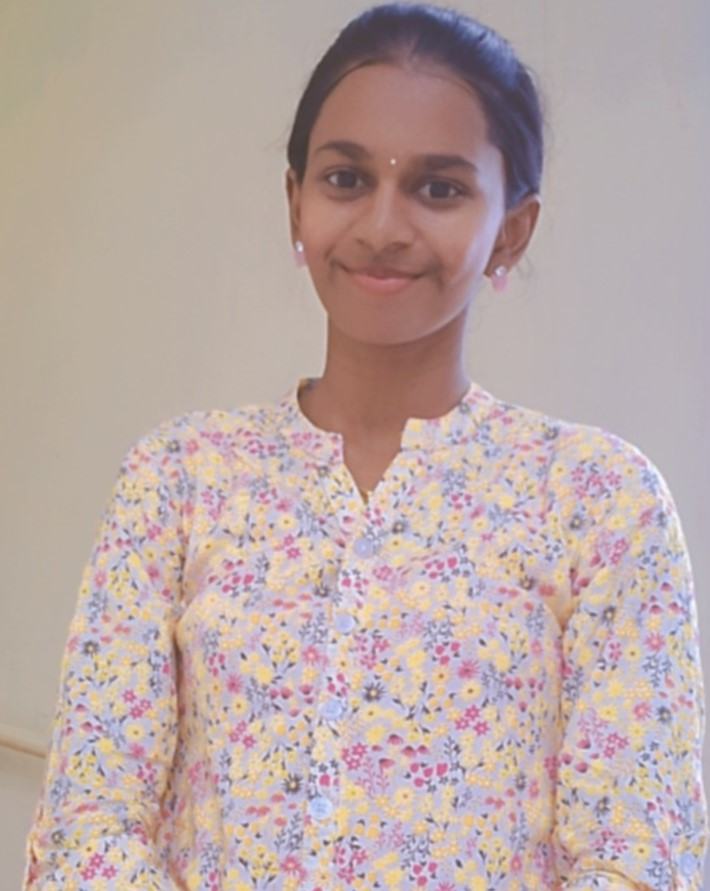

Hello, I'm Idhayanila! 👋
Thank you for visiting my profile and I hope you will be inspired.
About Me
I am Idhayanila VP, a passionate and multi-talented student currently pursuing my third year under the stream of Computer Science and Engineering at Kamaraj College of Engineering and Technology, Virudhunagar. With a deep interest in technology, communication, and leadership, I actively participate in technical symposiums, workshops, and competitions, often taking on the role of a coordinator or team leader. As an NSS volunteer, I find purpose in organizing and hosting events, showcasing my dedication to community service and strong communication skills. My achievements include winning accolades in elocution, winning prizes in technical symposiums , and contributing significantly to department-level symposiums — earning me the “Best Contributor Award.†Sports is another vital part of my identity. As an all-rounder and a district-level badminton player, I’ve won titles in both singles and doubles categories. I enjoy balancing academics with extracurricular excellence, and I take pride in being both a determined learner and a supportive teammate. My current interests include languages like Java, Pyhton, database management, and Red Hat system administration. I am enthusiastic about exploring new technologies, leading initiatives, and growing into a tech-savvy, people-centric professional.
My Skills
Foundational Languages
HTML, CSS, JavaScript (Basics), Python (Basics) ,Java(Basics)
Soft Skills
Quick Learner, Teamwork, Excellent Communication, Adaptability ,High confidence level
Get in Touch
I'm always open to connect with professionals and to explore new opportunities. Feel free to reach me out!